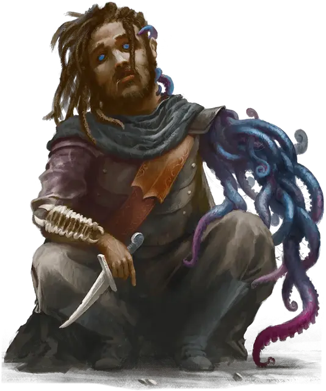

Потусторонний развратитель
Otherworldly Corrupter
Маленькая или Средняя Аберрация, хаотично-злая

Класс Доспеха 19 (природный доспех)
Хиты 217 (29к8 + 87)
Скорость 40 футов, лазая 40 футов
| мод | спас | ||
|---|---|---|---|
| СИЛ | 12 | +1 | +1 |
| ЛОВ | 22 | +6 | +12 |
| ТЕЛ | 16 | +3 | +3 |
| мод | спас | ||
|---|---|---|---|
| ИНТ | 22 | +6 | +12 |
| МДР | 18 | +4 | +4 |
| ХАР | 20 | +5 | +5 |
Навыки Восприятие +10, Скрытность +18
Сопротивление урону психическая энергия
Иммунитет к состояниям испуг, очарование
Чувства слепое зрение 30 футов, пассивное Восприятие 20
Языки Общий, Воровской жаргон, Телепатия 120 фт.
Опасность 17 (18000 опыта)
Бонус мастерства +6
Особенности
Легендарное сопротивление (3/день). Если развратитель проваливает спасбросок, он может вместо этого сделать спасбросок успешным.
Чужеродный разум. Магия и другие умения не могут определить тип существа развратителя. Если существо пытается прочитать мысли развратителя, оно должно совершить спасбросок Интеллекта Сл 20, иначе станет ошеломлённым на 1 минуту. Ошеломлённое существо может повторять спасбросок в конце каждого своего хода, оканчивая на себе действие эффекта в случае успеха.
Паучье лазание. Развратитель может лазать по сложным поверхностям, включая потолки, без совершения проверок характеристик.
Действия
Мультиатака. Развратитель совершает три атаки Шепчущим клинком и может использовать Истощающим прикосновением.
Шепчущий клинок. . Рукопашная или Дальнобойная атака оружием: +12 к попаданию, досягаемость 5 футов или дистанция 60 футов, одна цель. Попадание: 10 (1к8 + 6) колющего урона плюс 14 (4к6) урона психической энергией. Если целью является существо, оно должно преуспеть в спасброске Мудрости Сл 20, иначе не сможет говорить до начала следующего хода развратителя.
Истощающее прикосновение. Извивающееся щупальце развратителя набрасывается на существо, которое развратитель может видеть в пределах 30 футов. Цель должна преуспеть в спасброске Телосложения Сл 20, иначе станет парализованной до конца своего следующего хода, после чего цель становится невосприимчивой к этому Истощающему прикосновению в течение 24 часов.
Бонусные действия
Смена формы. Развратитель волшебным образом превращается в любое существо Маленького или Среднего размера, сохраняя при этом свои игровые характеристики (кроме размера). Это превращение заканчивается раньше, если хиты развратителя уменьшается до 0 или он использует бонусное действие, чтобы окончить его.
Реакции
Невероятное уклонение. Когда нападающий, которого развратитель может видеть, попадает по нему атакой, он может реакцией уменьшить вдвое урон, причиняемый ему этой атакой.
Легендарные действия
Развратитель может совершить 3 легендарных действия на выбор из перечисленных ниже вариантов. Лишь одно легендарное действие может быть совершено за один раз, и только в конце хода другого существа. Развратитель восстанавливает истраченные действия в начале своего хода.
Ловкость. Развратитель выпутывается из немагических пут и оканчивает на состояние схваченный или опутанный, после чего перемещается на свою скорость, не провоцируя атак.
Ранение (стоит 2 действия). Развратитель совершает одну атаку Шепчущим клинком.
Бесформенный побег (стоит 3 действия). Развратитель растворяется в движущейся массе плоти, щупалец, глаз, когтей и ртов. До двух существ, которых разрушитель может видеть в пределах 20 футов, должны совершить спасбросок Интеллекта Сл 20, получая 18 (4к8) урона психической энергией при провале или половину этого при успехе. Эта трансформация длится до конца следующего хода развратителя. Будучи трансформированным, развратитель с преимуществом совершает броски атаки, а броски атаки, совершаемые против него, совершаются с помехой, и он может перемещаться сквозь пространство шириной не менее 1 дюйма, без протискивания.
Логово
Этот развратитель обитает в месте силы и безопасности, будь то скрытое здание гильдии воров или роскошный особняк. Логово наполнено хитроумными ловушками, которые дезориентируют, ослабляют и убивают незваных гостей.
ПО развратителя увеличивается до 18 (20,000 опыта), если столкновение происходит в его логове.
Действия логова
При значении инициативы «20» (проигрыш при ничье), развратитель может совершить действие в логове, чтобы создать один из следующих эффектов; он не может использовать один и тот же эффект два раунда подряд:
Отвлечение. Пронзительный звук наполняет логово. Существа, которые могут его слышать, должны преуспеть в спасброске Телосложения Сл 15, иначе их концентрация прерывается.
Западня. Скрытые ловушки нацеливаются на трёх существ, которых развратитель может видеть в логове. Каждое существо должно преуспеть в спасброске Силы Сл 15, иначе станет схваченным (Сл высвобождения 15) и опутанным до тех пор, пока не высвободится или удерживающая его ловушка не будет уничтожена. Каждая ловушка имеет КД 11, 10 хитов и обладает иммунитетом к урону ядом и психической энергией.
Ловушки. Ловушки нацеливаются на двух существ, которых развратитель может видеть в логове. Каждая цель должна преуспеть в спасброске Ловкости Сл 15, иначе попадёт в ловушку. Развратитель бросает 6к6 и пораженные цели получают урон, равный общему выпавшему значению. Урон является дробящим, колющим, рубящим, уроном ядом или огнём, по выбору развратителя, когда он использует это действие.
Местные эффекты
Местность, в которой находится логово развратителя, искажается его присутствием, создавая один или несколько из следующих эффектов:
• Процветание коррупции. Находясь в пределах 3 миль от логова, существа, которые не являются членами организации развратителя с помехой совершают проверки характеристик, основанных на навыках Проницательности, Восприятия и Убеждения.
• Сильнодействующие токсины. Когда члены организации развратителя наносят урон ядом, находясь в пределах 3 миль от логова, они игнорируют сопротивление цели к урону ядом.
Если развратитель умирает, эти эффекты исчезают в течение 1к10 дней.
Описание
Испытание для партий 3-го уровня (уровни с 11 по 16), потусторонний развратитель - это ужасающая аберрация, которая заражает хозяина или выдает себя за него.